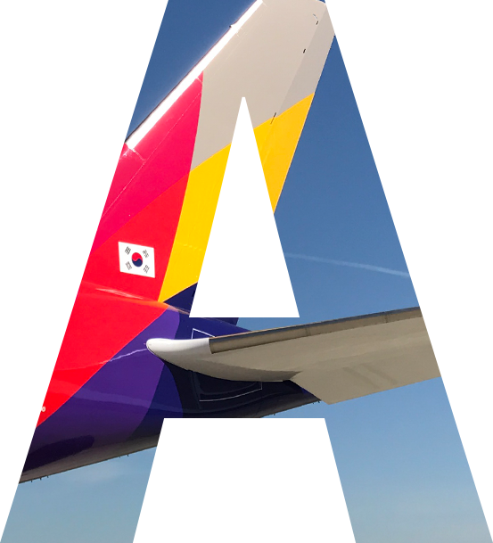
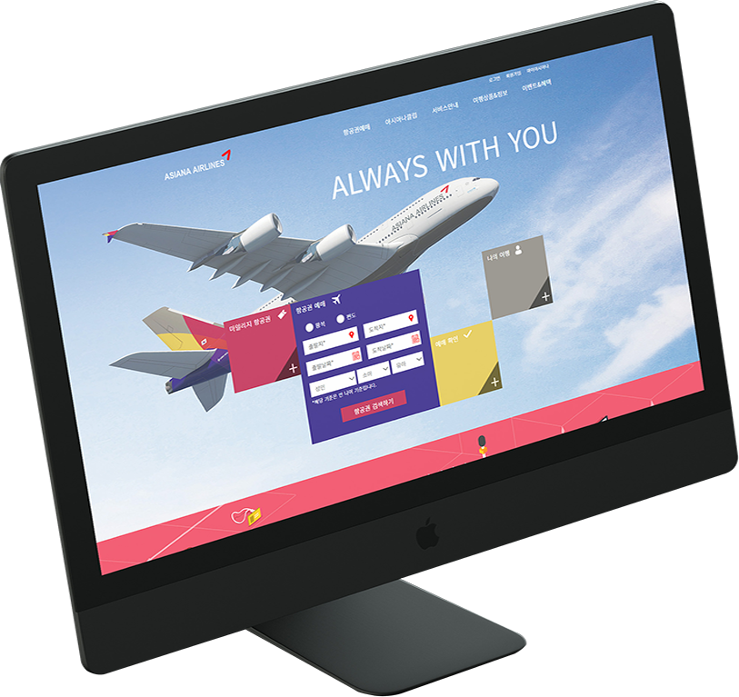
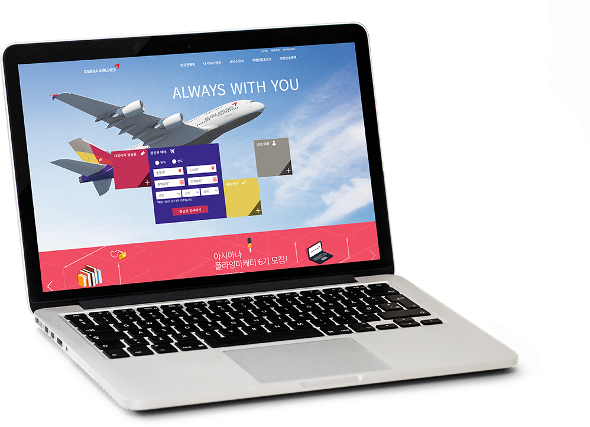

Work
- 01 A TWOSOME PLACE
- 02 TWOSOME MOBILE
- 03 ASIANA AIRLINE
- 04 RWD PROJECT

03
asiana airlines
renewal design & publishing

PROJECT GOAL
다른 항공사 페이지와 비교해봤을때 이용자 입장에서 가장많이 찾고 이용하는 페이지의 중요도가 적어보였습니다.
기능적인 부분을 해치지 않으면서 시각적으로 한눈에 알아볼 수 있는 페이지를 만들고 싶었습니다. 폼으로 구성된
요소들이 대부분이라 조금 딱딱해 보일 수 있는 페이지를 부드럽게 구성했습니다.
STRATEGE
아시아나의 색동 컨셉을 가져와 메인비주얼에 적용시키고 이용자들이 가장 많이 찾고 이용하는
기능을 중앙에 배치하여 시각적으로 눈에 쉽게 띄게 설계하였습니다. 공간이 한정되 있기 때문에
필요한 부분을 보여주고 다른부분을 숨기는 방식으로 구현했습니다.
STYLE GUIDE
COLOR
FONT
